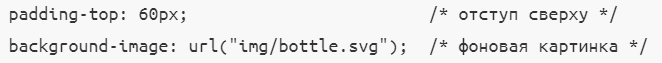

Свойства и значения
- О свойствах
- Как мы поняли из прошлых тем , что свойства располагаются внутри селектора в CSS файле.
Свойств на данный момент огромное множество , это может быть и задание цвета текста(color) ,
и изменение отступов у блока , и так далее
- О значениях
- Каждому свойству указывается значения.Так например свойству color указывается значение цвета , например red.
А свойству margin-bottom(устанавливает внешний нижний отступ) указывается значение например в пикселях.
Так же значением background-img может быть изображение.

Каскадирование
- Приоритетность
- 1 место в приоритете занимает стили пользователя , потом стили автора , а после этого стили браузера
- Специфичность
- Если к одному элементу одновременно применяются противоречивые стилевые правила,
то более высокий приоритет имеет правило, у которого значение специфичности селектора больше.
Если два селектора имеют одинаковую специфичность, то применяться будет тот стиль, что указан в коде ниже.